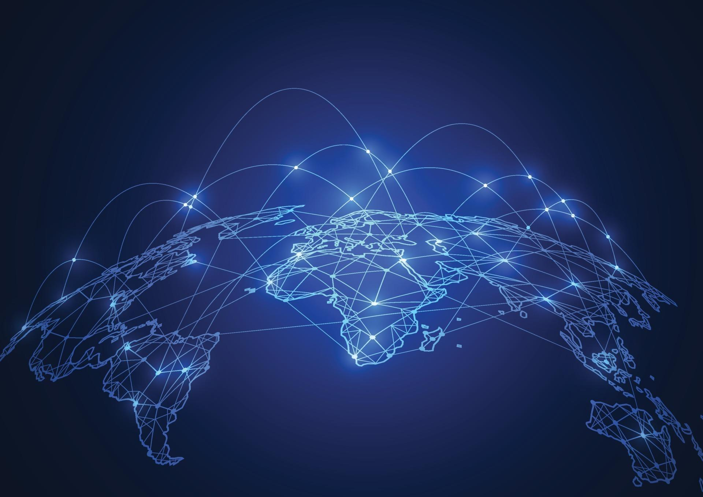
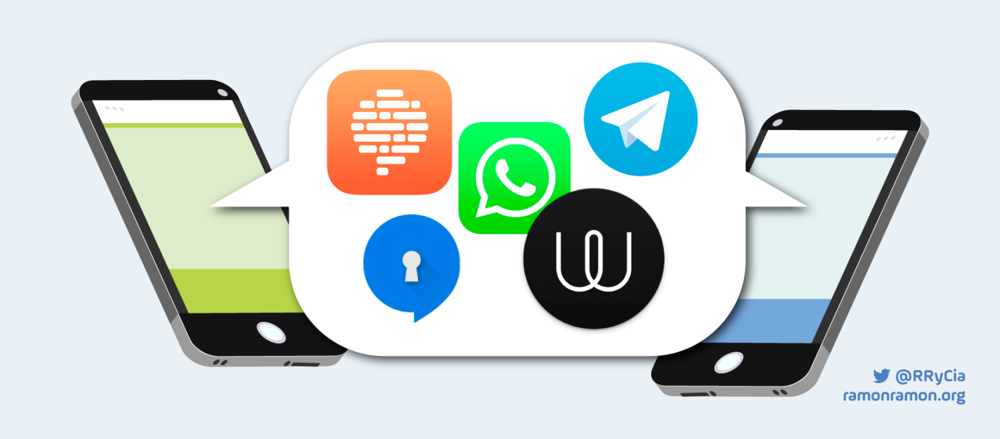
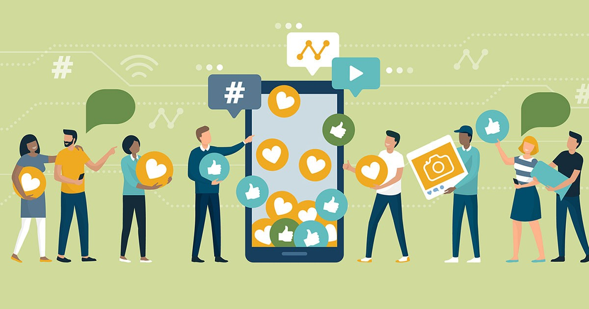
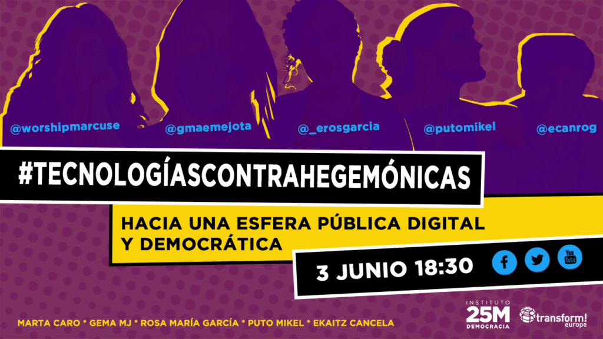
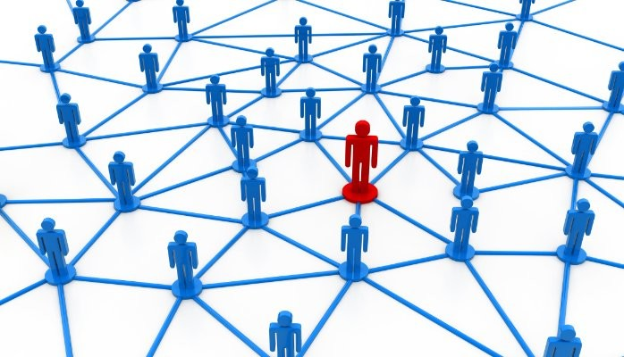

Impactos en los que han influenciado
- Conectividad global: Las tecnologías web han eliminado las barreras geográficas, permitiéndonos conectarnos con personas de todo el mundo instantáneamente. Esto ha facilitado la comunicación entre individuos y comunidades en diferentes partes del mundo. 
- Comunicación instantánea: Las plataformas de mensajería instantánea nos permiten comunicarnos de manera rápida y eficiente, sin importar la distancia. Esto ha agilizado la comunicación tanto a nivel personal como profesional, permitiendo una respuesta casi inmediata. 
- Interacción social: Las redes sociales nos brindan la oportunidad de interactuar con amigos, familiares y desconocidos, compartiendo ideas, fotos, videos y momentos de nuestra vida diaria. Esto ha fortalecido los lazos sociales y ha creado nuevas formas de expresión y conexión. 
- Impacto en la opinión pública: Las redes sociales han cambiado la forma en que se forman y difunden las opiniones públicas, permitiendo que las voces individuales sean escuchadas a una escala global. Esto ha dado lugar a movimientos sociales y cambios políticos impulsados por la participación ciudadana en línea. 
- Marketing y publicidad: Las empresas utilizan las redes sociales como una poderosa herramienta de marketing y publicidad, llegando a audiencias específicas de manera más efectiva. Esto ha transformado la industria del marketing, permitiendo una segmentación más precisa y una mayor interacción con los clientes.
- Creación de comunidades: Las comunidades en línea se han convertido en espacios donde las personas con intereses comunes pueden conectarse, compartir conocimientos y apoyarse mutuamente. Esto ha dado lugar a comunidades virtuales muy diversas, desde grupos de aficionados hasta redes profesionales.
- Viralidad: El contenido en las redes sociales puede volverse viral rápidamente, alcanzando a millones de personas en cuestión de horas. Esto ha cambiado la forma en que se distribuye y consume la información, y ha dado lugar a nuevos fenómenos culturales y sociales. 